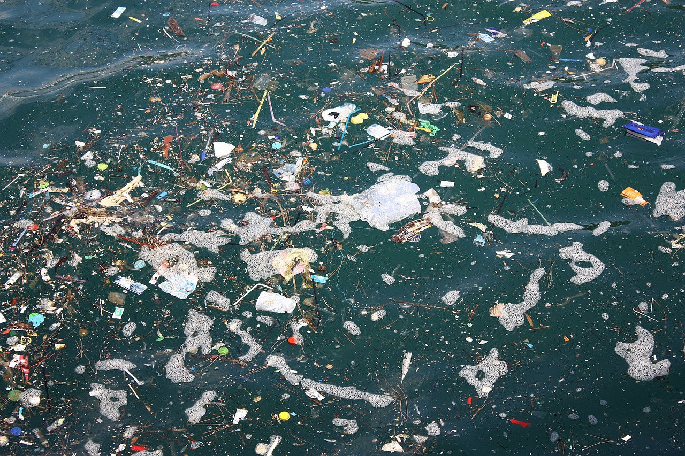
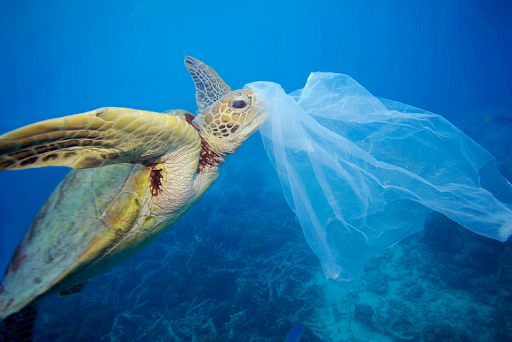
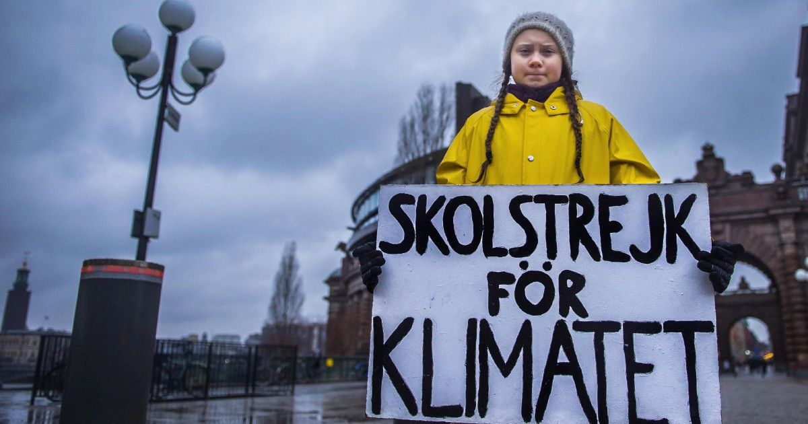
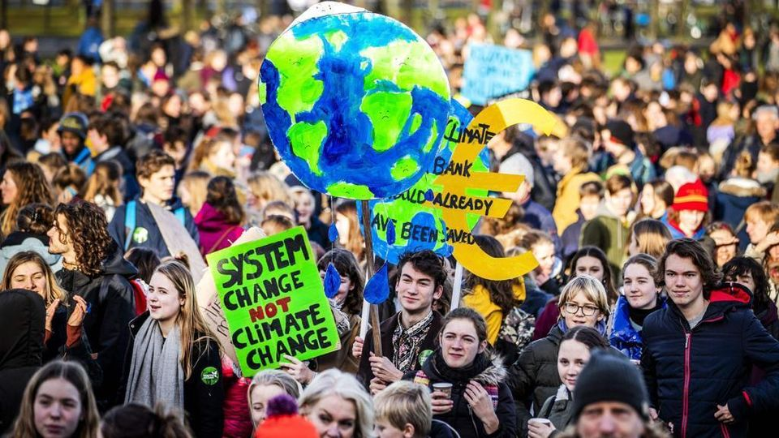

Autore: Marius Zaharia

Le acque stanno diventando un’immensa discarica nella quale finisce ogni sorta di rifiuto

Approfondimenti sul movimento fondato da Greta Thunberg

Manifestazione internazionale per la sostenibilità ambientale e la salvaguardia del nostro pianeta
L’inquinamento del mare è una delle emergenze più urgenti da affrontare.
Mari e oceani ricoprono tre quarti della superficie terrestre e costituiscono il maggiore spazio vitale del pianeta.
I rifiuti maggiormente presenti in mari e oceani sono le plastiche e le microplastiche.
L'inquinamento marino è principalmente di origine terrestre, in particolare è una conseguenza dell'immissione di acqua di scarico e di affluenti industriali nei fiumi, che poi portano le sostanze inquinanti al mare. La principale fonte di inquinamento di origine marina è quello da idrocarburi, in particolare delle petroliere, che alcune volte riversano grandi quantità di petrolio nelle acque.
Deriva dagli scarichi delle città, quando l'acqua si riversa senza alcun trattamento di depurazione nei fiumi o direttamente nel mare
Deriva da sostanze diverse che dipendono dalla produzione industriale
Deriva dall'uso eccessivo e scorretto di fertilizzanti e pesticidi, che essendo generalmente idrosolubili, penetrano nel terreno e contaminano le falde acquifere
Una delle conseguenze dell’inquinamento dell’acqua è la perdite di specie preziose e della biodiversità. Gli inquinanti possono minacciare una specie alterandone la capacità riproduttiva, introducendo cambiamenti genetici e anche influenzando la capacità delle specie di adattarsi e rispondere ad altre sollecitazioni ambientali.
Gli inquinanti possono anche danneggiare le comunità acquatiche distruggendo il loro habitat. Un inquinante può eliminare una specie essenziale per il funzionamento dell’intera comunità, può promuovere il dominio di certe specie indesiderabili o diminuire i numeri e la varietà delle specie presenti nella comunità. Può anche interrompere la dinamica dei siti alimentari presenti nella comunità.
Il 20 agosto 2018, Greta Thunberg, quindicenne di Stoccolma, decide di non andare a scuola. L'obiettivo era protestare per chiedere ai governi (inizialmente quello svedese) di rispettare gli accordi di Parigi sulle riduzioni delle emissioni di CO2.
Decide di scioperare ogni venerdì per il clima. Le sue foto diventano virali e grazie alla sua determinazione viene invitata alla COP24 in Polonia, dove ha tenuto un discorso che ha fatto il giro del mondo.
Da lì nasce il movimento Fridays for future (“Venerdì per il futuro”).
Da quella manifestazione isolata è nato un movimento internazionale spontaneo e pacifico, che riconosce in Greta Thunberg la propria figura di spicco.
L'obiettivo principale è tenere alta l'attenzione sul tema dei cambiamenti climatici, in modo da trasformarlo in una priorità per l'agenda politica internazionale, quindi chiedere ai governi di eliminare (o cercare di ridurre) i combustibili fossili.
Le proteste sono pacifiche, quindi escludono azioni o reazioni violente dal punto di vista sia verbale sia fisico. Le attività normalmente svolte si riducono ad azioni più dirette e con obiettivi specifici che attirano attenzione sull'obiettivo del movimento.
 Per sensibilizzare i cittadini e aumentare la consapevolezza ambientale ogni anno, il 22 aprile, viene celebrata la Giornata Mondiale della Terra, la più grande giornata di mobilitazione del pianeta. L'evento riesce a coinvolgere ogni anno circa un miliardo di persone.
L’Istituzione della Giornata mondiale della Terra si deve a John McConnell. Secondo lui gli esseri umani avevano l’obbligo di occuparsi della terra e condividere le risorse in maniera equa.
Il 22 aprile viene usato dai gruppi ecologisti come occasione per valutare le problematiche del pianeta:
l'inquinamento di aria, acqua e suolo, la distruzione degli ecosistemi, le migliaia di piante e specie animali che scompaiono e l'esaurimento delle risorse non rinnovabili (combustibili fossili).
1) Manifestare
2) Piantare un albero/alberi
3) Spegnere la luce quando non in uso
4) Fare la raccolta differenziata
5) Risparmiare acqua
6) Utilizzare sacchetti riciclabili per fare la spesa
7) Cercare di ridurre gli sprechi alimentari